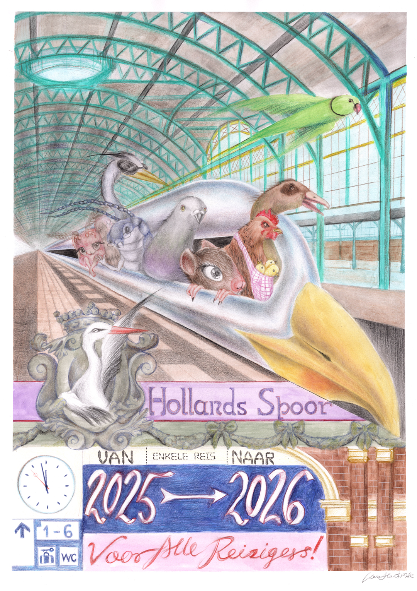

Voor Alle Reizigers
A moth, a heron, a silverfish, a pigeon, a rat, a hen with chicks, and a egyptian goose sits in seagull-shaped train speeding ahead. A parakeet in flight accompanies the journey. At the city’s signature station Holland Spoor, the stork from the coat of arms of The Hague waves a goodbye. As shown on the ticket, the train departs from 2025 and heads to 2026; and it is "voor alle reizigers". The Nederlandse Spoorwegen officially switched from using the traditional greeting “ladies and gentlemen” to “beste reizigers” in 2017 to adopt a gender-neutral language, intending to make all passengers feel welcome regardless of gender identity. In my drawing, “alle reizigers” also include the non-human citizens of The Hague.
This drawing is printed on the Nieujaarskaart (New Year's Greetings Card) sent out by the mayor of The Hague, Jan van Zanen, to his network! It is my honour!
This drawing is printed on the Nieujaarskaart (New Year's Greetings Card) sent out by the mayor of The Hague, Jan van Zanen, to his network! It is my honour!
Medium
Water color and color pencil on paper,
A2
Edition
Fine art giclée print, 55cm x 39cm. Print by request
Press
Den Haag Central 2026-01-18
Stadstekenaar
Gemeente Den Haag
